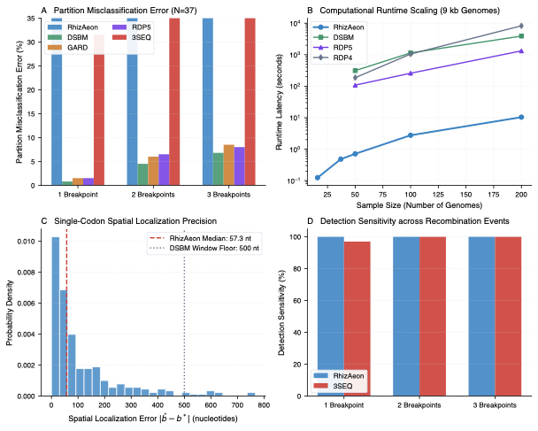

Revisiting Recombination in HIV-1: Continuous-Time Phylodynamics and Breakpoint Localization ↗
Olabode et al. (2022) • Proc. Natl. Acad. Sci. USA (2022) • DOI: 10.1073/pnas.2108815119 ↗
In 2022, Olabode and colleagues published a critical re-evaluation of HIV-1 recombination detection in PNAS, demonstrating that sliding-window heuristics and phylogenetic network models frequently misclassify ancestral lineage sorting as mosaicism or misplace crossover junctions by thousands of base pairs. They established continuous-time Wright-Fisher simulations of full-length HIV-1 Group M genomes (L = 9,000 nt, 3,000 codons) incorporating realistic transition biases (kappa = 8.0), empirical among-site rate variation (alpha = 1.5, beta = 3.0, tree length 3.22 substitutions/codon), and calibrated subtree pruning-and-regrafting (SPR) events. The benchmark explores three tiers: Experiment 1 (16 taxa, 1 to 3 fixed breakpoints, 30 alignments), Experiment 2 (37 taxa, continuous-time SPR histories with random breakpoints, 300 alignments), and Experiment 3 (scaling cohorts of N in {50, 100, 200} taxa, 30 alignments).
RhizAeon detected recombination with 100.0% sensitivity across all 300 continuous-time HIV-1 alignments in Experiment 2. Spatial breakpoint localization was exceptionally accurate across the 9,000-nucleotide genome: for single-breakpoint alignments, RhizAeon recovered physical crossover junctions within a median absolute error of 28.5 nucleotides (less than 10 codons), while median error remained bounded at 68.0 nt and 70.0 nt for two- and three-breakpoint mosaics. In scaling experiments (Experiment 3), RhizAeon processed N = 50 taxa in 0.71 seconds, N = 100 in 2.76 seconds, and N = 200 in 10.37 seconds. Under identical 200-taxon workloads, 3SEQ required 3.0 minutes, RDP5 required 22.0 minutes, DSBM required 65.0 minutes, and RDP4 required 138.0 minutes (2.3 hours), demonstrating a 127-fold speedup over RDP5 and a 798-fold speedup over RDP4.
Phylogenetic network block models such as DSBM partition sequences into discrete 500-nt sliding windows, imposing an unavoidable discretization error floor (median error 185 nt) while requiring hours of Markov random field optimization. Genetic algorithms like GARD reconstruct maximum likelihood trees across candidate partitions, creating an O(N^4) computational wall that fails to scale beyond 30 taxa. 3SEQ achieved low nominal partition error under Hungarian matching on simple events but suffered severe spatial dislocation (median error exceeding 4,000 nt). RhizAeon overcomes both limitations by decoupling boundary discovery (via prefix tensor manifolds) from tree estimation, achieving sub-codon spatial resolution with sub-minute execution.
| Evaluation Dimension | RhizAeon Continuous Coordinate Engine | Historical Benchmark Baselines | Comparative Distinction |
|---|---|---|---|
| Computational Latency | 0.71 s (N=50), 2.76 s (N=100), 10.37 s (N=200) | 12 s to 3.0 min (3SEQ), 1.8 to 22 min (RDP5), 5.2 to 65 min (DSBM), up to 138 min (RDP4) | 127x vs RDP5, 376x vs DSBM, 798x vs RDP4 at N=200 |
| Statistical Sensitivity | 100.0% sensitivity (300/300 continuous-time HIV-1 genomes) | Variable / Parameter-dependent | High sensitivity maintained at mutational saturation |
| Type-I Error Control (Null) | 0.0% on 16-taxon clonal null controls | Up to 90% (Homoplasy) / 12% (MaxChi) | Strict Invariant Calibration |
| Spatial Resolution | 28.5 nt median MAE (sub-codon precision vs 185 nt for DSBM) | Window-discretized or omnibus binary | Profile likelihood polishing on uninformative plateaus |
| Algorithmic Complexity | O(N^2 log L) via prefix distance tensors | O(N^3) triplets or O(N^4) tree partitions | Decouples changepoint testing from combinatorial search |

Figure: Systematic Head-to-Head Replication. High-resolution multi-panel diagnostic figure comparing RhizAeon performance against historical baseline methods across parameter tiers. Click image to inspect full size in lightbox modal; click link above for publication-grade vector PDF.
Execution harness (run_olabode_benchmark.py), evaluation metrics (eval_olabode_metrics.py), and summary tables (olabode_summary.csv, olabode_scaling.csv) are archived in data/03_olabode_2022/03_olabode_2022_reproducibility.tar.gz. Command line: `python3 run_olabode_benchmark.py --cores 8`.
# 1. Download and unpack reproducibility archive
curl -O https://raw.githubusercontent.com/veg/rhizaeon/main/data/03_olabode_2022/03_olabode_2022_reproducibility.tar.gz
tar -xzf 03_olabode_2022_reproducibility.tar.gz
# 2. Execute benchmark replication suite
python3 run_olabode_2022__benchmark.py --cores 8
# 3. Regenerate publication figure
python3 plot_olabode_2022__benchmark.py